有名酷道の峠は絶景スポット < 京柱峠 / 高知県大豊町・徳島県三好市 >
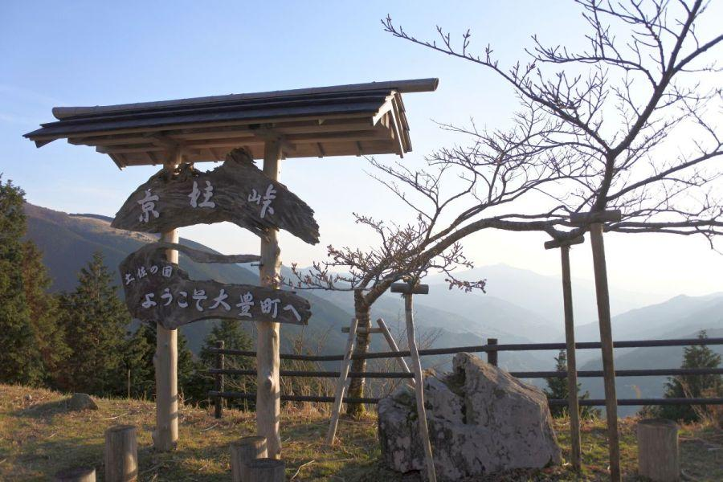
四国と言うと 一般的に海のイメージが強いエリアですが、実際には山林の面積が多くを占め 非常に山深い土地。
"京" の字が付いた、徳島/高知の県界になっているこちらの峠は、街から遠く 酷道(こくどう)と称される険しい道の先に位置するため、到達難易度は高めの峠になっています。
有名酷道・ヨサク
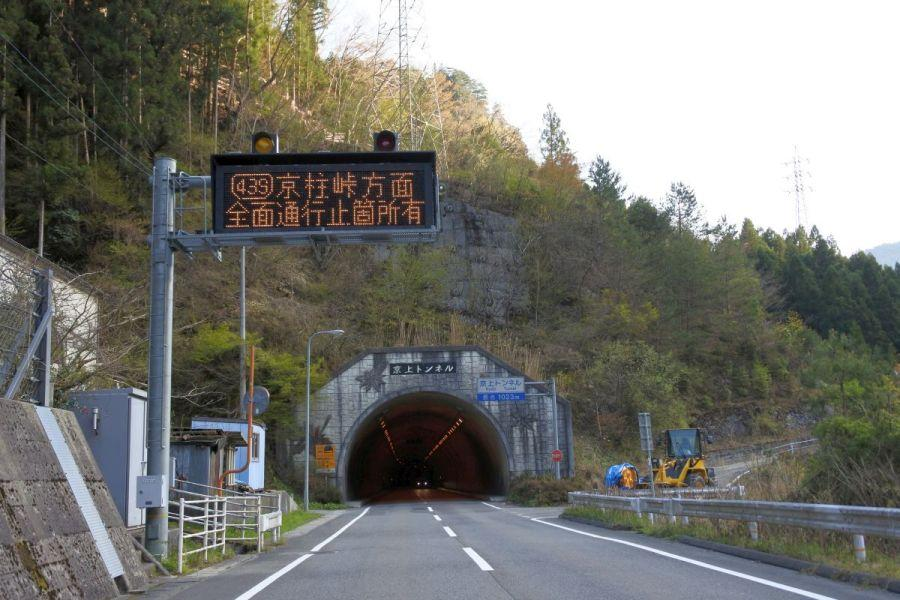
京柱峠(きょうばしらとうげ)への徳島県側の分岐は、祖谷エリアから。
と言っても、かずら橋等がある観光エリアからは少し先。峠を越える路線バスは運行されていないので、自家用車・レンタカー等が必須になります。
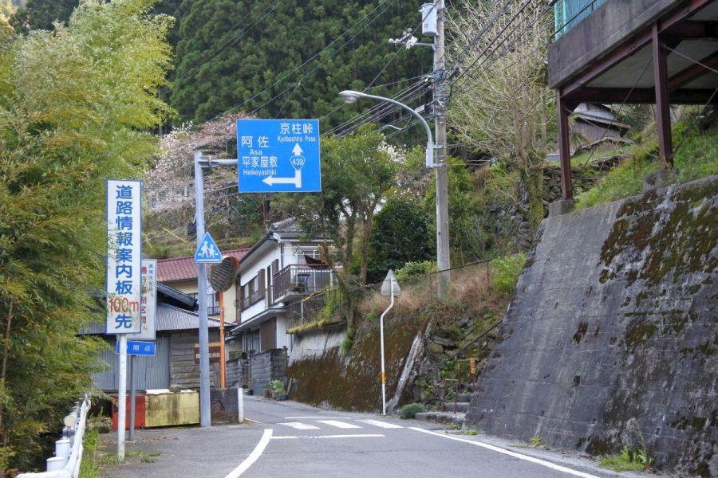
狭路区間が多く 土砂崩れ等の通行止めがしばしば発生する国道を "酷道(こくどう)" と呼んだりしますが、当国道は その番号をもじって "ヨサク" の愛称があります。酷道マニアの間では最も知られた道。
NHK番組「ドキュメント72」の題材になったほど。 → 「ゆきゆきて 酷道439」
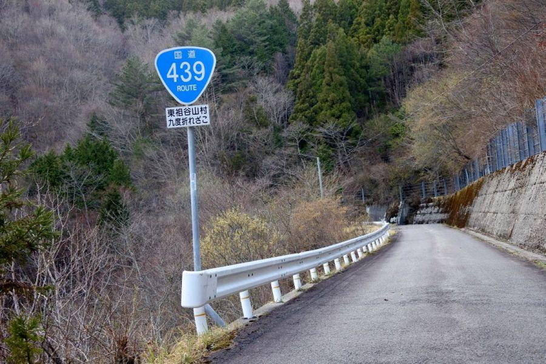
数年前と比べると、集落がある場所を中心に道路改良が行われ むしろ走り易くなった箇所はありますが、峠越えなどでは酷道区間は健在。険しいことが人気になる不思議な道です。
交通量は殆どありませんが、狭い場所で 対向車両と離合しなければならない場面に出くわすことがあり、運転には注意が必要です。
阿佐國境・京柱峠
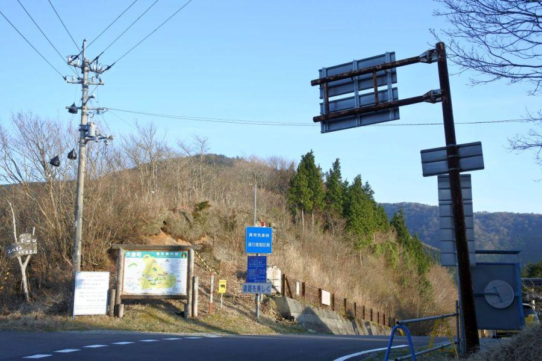
狭く険しい峠道を登ると、峠に到着。
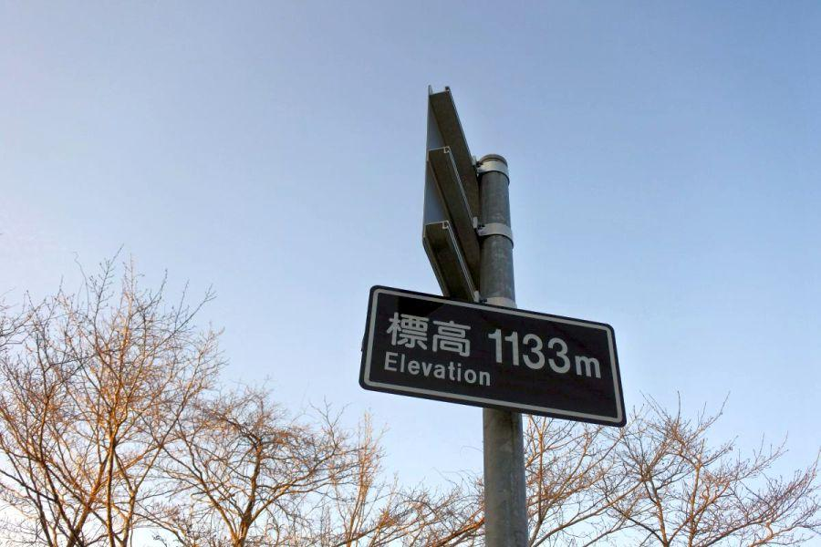
峠の標高は1,133m。
この高さは同じ徳島県にある高越山(こうつさん)と同じ。北海道道南を代表する景勝地・北海道駒ヶ岳(ほっかいどうこまがたけ / 1,131m)より やや高い。
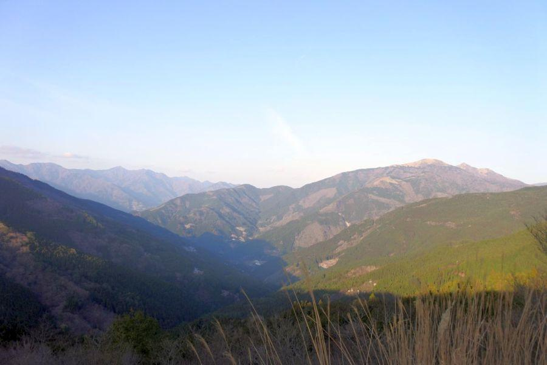
京柱峠から見た徳島県側
晴れた日の眺望はすこぶる良く、山頂付近に木が生えていないように見えるお山は「三嶺(みうね / 1,894m)」
高知県での呼び名は 「さんれい」。山の稜線が徳島県・高知県の県境になっている、四国第二の高峰・剣山(太郎笈)－次郎笈から続く山脈です。
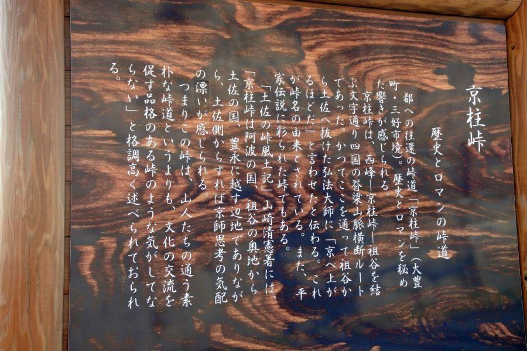
"京" と付く名前の由来は、その昔 弘法大師が阿波(祖谷)から土佐へ移動する際に この峠を越えたが、あまりに時間がかかり 京(京都)へ上がるほど。と言ったことが、峠の名前になった。
京柱峠周辺
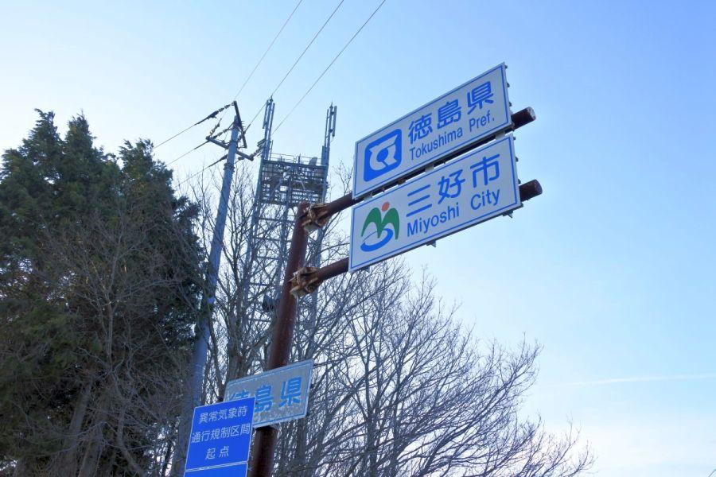
県境に立つ県名看板
徳島県のものは新旧大きなものが設置されているが、高知県の同規格の看板は見当たりません。
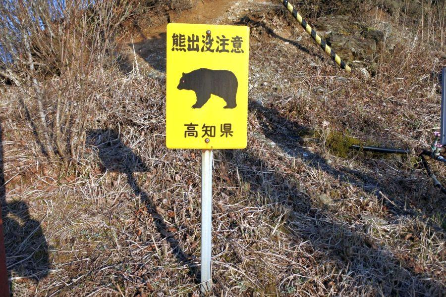
周辺を見渡したところ、高知県と表記された看板がありました。
元々クマのイメージが無い四国...
その通りでして、これはかなり貴重な存在。四国の他の場所で 熊注意を促す看板を見た事がありません。そもそも四国に生息する熊自体が 相当希少な存在で、剣山系に一家族が暮らすだけだとか...
四国の熊を追っかけている研究家さんに言わせると「出会うことができたらスクープレベル」
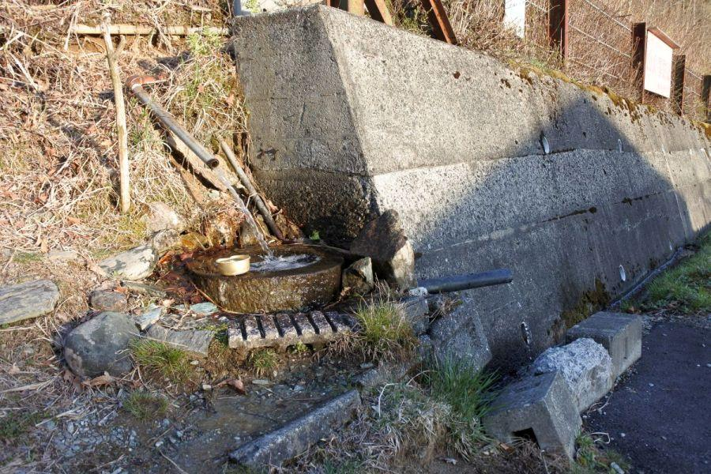
その看板の横には水が湧いています。場所柄、動物たちが湧水を飲みにくるのでしょうか。
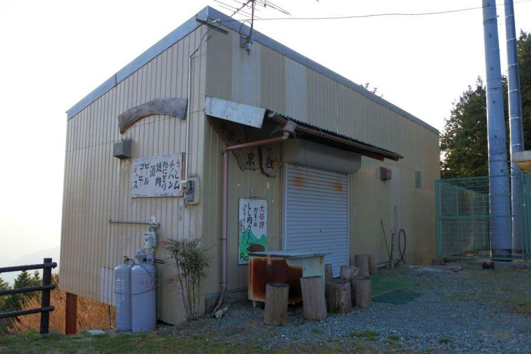
京柱峠にはお茶店がありましたが、平成29年(2017)の営業をもって閉店。
ここではツーリングライダーや酷道愛好者にとっては お約束と言える名物「しし肉うどん」を始め 軽食を頂くことが出来ました。峠近辺・両登り口に飲食店・食糧販売店が無いので、注意が必要です。
阿波から土佐へ
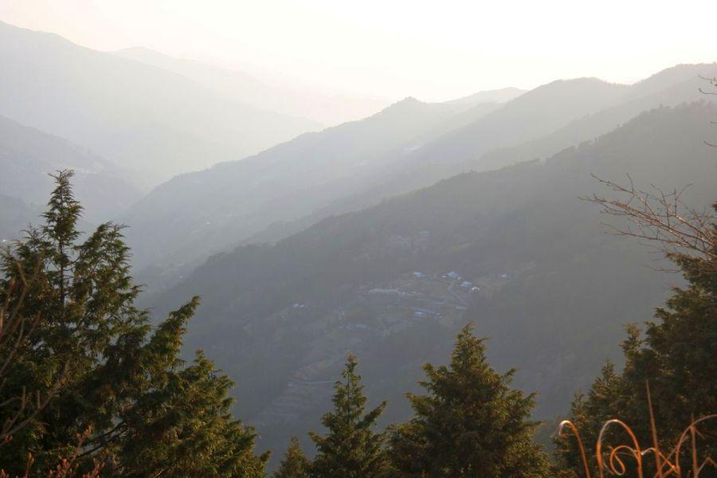
峠から高知県側を見下ろすと、小さな集落が見えます。平地は殆ど無く、街へも遠い。厳しい環境で人々が暮らしていることがわかります。
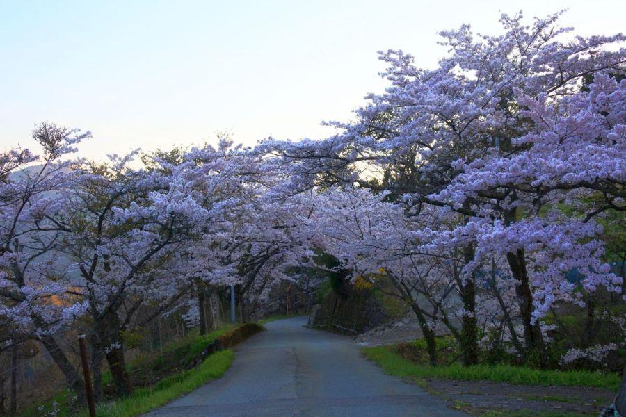
平家や南朝の落人伝説が伝わる 徳島や高知の山中。所々に桜の群落があり、春になると道行く人々を楽しませています。
京柱峠
< 自家用車 >
高松駅から 約2時間、127km
高知龍馬空港から 約1時間20分、63km
※ 主な地点からの最速・最短距離